Le code des templiers ou code Maya, utilisé par les scouts, est une variante du « chiffre des templiers ». C’est une manière de faire des codes avec des symboles.
Dans ce code, plutôt que de remplacer une lettre par une autre, les inventeurs ont préféré remplacer les lettres par des symboles pour diffuser leurs messages codés car ils étaient membres de sociétés secrètes et ne voulaient pas que tout le monde puisse comprendre leur message.
Le temple était, à l’époque, un ordre de moines dont la mission première était d’assurer la sécurité des pèlerins en Terre Sainte. Rapidement, les templiers (moines du temple) s’éloignèrent de cette mission et s’enrichirent au point de devenir les trésoriers du roi et du Pape. Pour coder les lettres de crédit, qu’ils s’échangeaient et qu’ils voulaient secrètes, ils remplaçaient chaque lettre par un symbole comme vous pouvez le voir sur l’image.
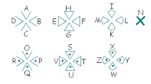Le code des templiers utilisé chez les scouts en est une variante ! Va à la page suivante et découvre celui qu’on utilise !
Le savais-tu ?
Le code des templiers est aussi surnommé « parc à cochon ». Marrant non
?
Les scouts utilisent une version du code des templiers qui peut être retrouvée facilement avec un stylo et une feuille. Chaque lettre correspond à un symbole comme dans tout code à symbole. Tu peux retrouver l’alphabet du code des templiers ci-dessous.
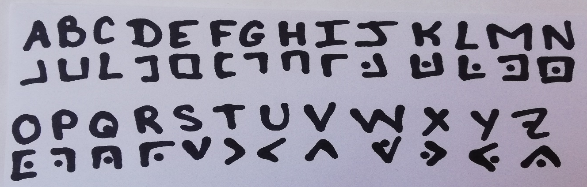
Mais comment décoder ce code quand on n’a pas l’alphabet sous les
yeux ?
Le code est construit grâce à 4 dessins dans lesquels on ajoute les
lettres dans l’ordre. Si tu as un message suivant le code des templiers
devant les yeux, il faut donc que tu retrouves quel symbole correspond à
quelle lettre.
Pour cela tu dois d’abord dessiner 2 grilles non fermées à l’extérieur de 3 cases de hauteur et 3 cases de largeur puis 2 grands X. Ensuite dans toutes les cases de la 2ème grille et dans tous les V du deuxième X, tu mets un point. Il ne te reste plus qu’à compléter avec lettres de l’alphabet dans l’ordre. Normalement tu obtiens les dessins comme ceux ci-dessous.
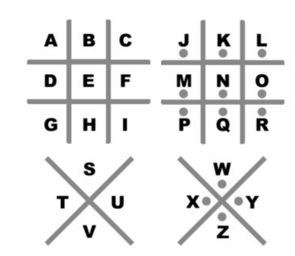Expérimente en essayant de décoder le code ci-dessous :
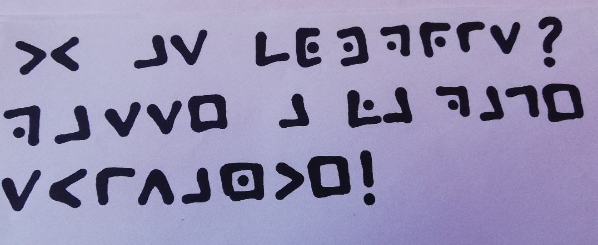Tu as croisé des codes avec des lignes verticales et horizontales croisées mais tu t’es toujours demandé ce que c’était… Ce code est appelé communément le code « chinois ». On le surnomme aussi le code du « secret des loups » des Scouts et Guides de France. Ce code utilisé pour cacher des messages paraît compliqué mais nous allons te dévoiler son fonctionnement et il n’aura plus aucun secret pour toi !
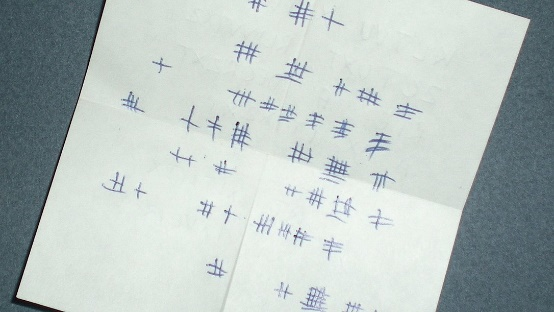Le code « chinois » suit une logique particulière qu’il faut comprendre pour pouvoir décoder facilement. Pour construire un code « chinois », on parcourt d’abord les voyelles dans l’ordre : A, E, I, O, U, Y. Elles sont toutes symbolisées par des lignes horizontales. Pour chaque voyelle, une ligne en plus est ajoutée, cela fonctionne comme sur la photo.
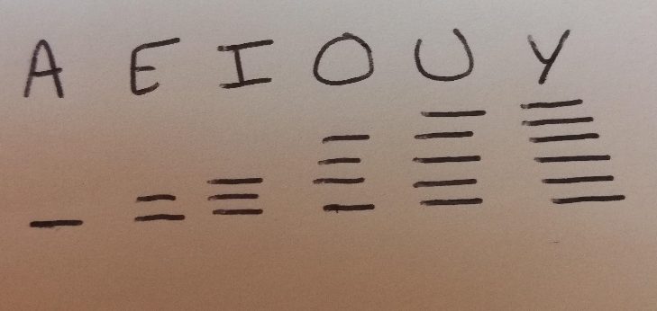Puis, on récite les lettres de l’alphabet qui suivent la dernière voyelle obtenue pour faire une nouvelle ligne verticale à chaque consonne. (Pour chaque consonne il y a donc un certain nombre de lignes horizontales qui correspondent à la voyelle présente juste avant la consonne dans l’alphabet et un certain nombre de lignes verticales qui corresponde au nombre de consonnes dans l’alphabet après la voyelle désignée pour atteindre la voyelle qu’on veut écrire.) Vous pouvez voir sur l’image le fonctionnement pour les consonnes.
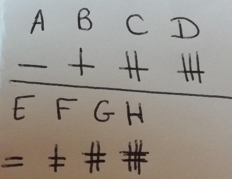Au final, l’alphabet donne en code chinois ceci :
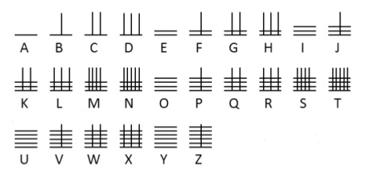Décode le message suivant et passe à la page suivante
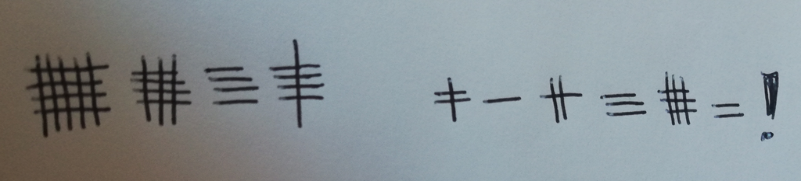Sur ta route scoute, il pourra aussi t’arriver de retrouver du code samouraï… il faut faire attention à ne pas le confondre avec le code chinois parce qu’ils sont frères et qu’il est lui aussi constitué de bâtons horizontaux et verticaux. Tu te demandes alors mais quelle est la différence entre les 2 ? La réponse est simple, le code « chinois » et le code samouraï fonctionnent de la même façon sauf que, dans le code samouraï les voyelles sont représentées par les lignes verticales et les consonnes par les lignes horizontales (c’est l’inverse du code « chinois » !).
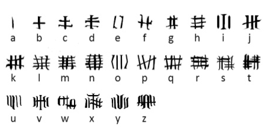Ta mission, ici, est de décoder le code « samourai » ci-dessous (voyelles en lignes verticales et consonnes en lignes horizontales). Une fois que tu auras le texte en langage clair, code-le en code des templiers. Ensuite envoie une photo de ton code des templiers, qu’on puisse le vérifier et te valider l’activité.
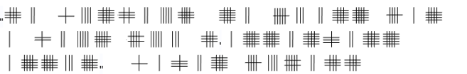Pour finir, charge ton résultat sur le site. Il sera validé au plus vite par des chefs et cheftaines !